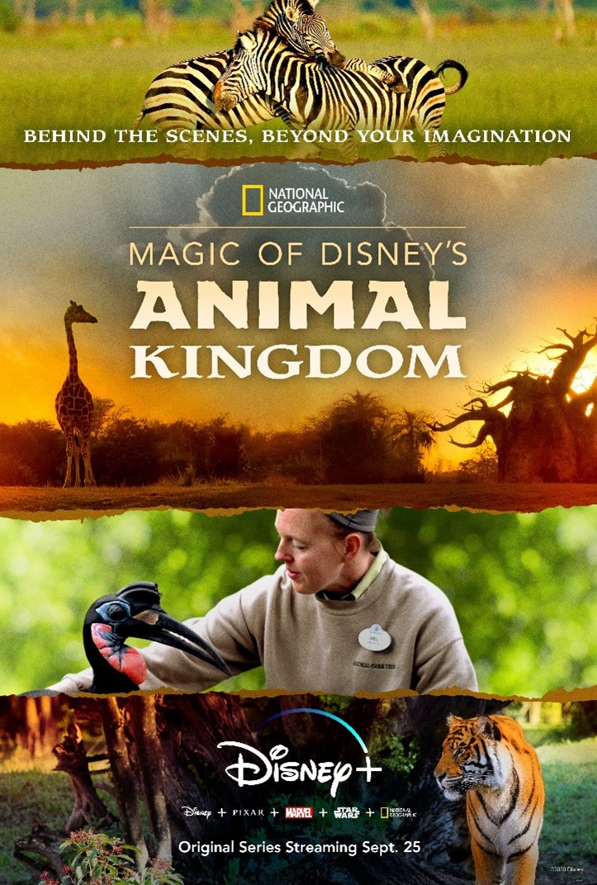

<section class="article-disney-plus py-5">
  <div class="container">
    <div class="row justify-content-center">
      <article class="col-sm-8">
        <h2>Animal Kingdom</h2>
        <h5>Partez pour une aventure extraordinaire à la recherche du trésor du capitaine Flint</h5>

        <div class="article_img">
          
        </div>

        <p>
          Grande Fan de Disney et amoureuse incontestable des animaux et de la nature, j’ai trouvé cette série vraiment superbe et originale. C’est à la fois un documentaire animalier et une visite des parcs animaliers Disney comme on les voit rarement et qui permet à ceux qui ne peuvent pas aller les visiter en vrai de se rendre compte de tout le travail et les moyens mis en œuvre également dans la préservation des espèces.
        </p>

        <p>
          J’ai aimé découvrir les animaux dans leur quotidien et surtout voir le lien très étroit tissé entre le personnel soignants et les animaux, j’y ai trouvé beaucoup de bienveillance et d’amour, c’est très touchant.
        </p>

        <p>
          Disney sans les animaux c’est inimaginable, un vrai bel hommage leur est rendu pour notre plus grand plaisir. A découvrir en famille.
        </p>

        <iframe width="560" height="315" src="https://www.youtube.com/embed/VEJbdMzsO6k" frameborder="0" allow="accelerometer; autoplay; clipboard-write; encrypted-media; gyroscope; picture-in-picture" allowfullscreen></iframe>

        <p class="signature text-end"><strong>Zira</strong></p>
      </article>

    </div>

  </div>

</section>


